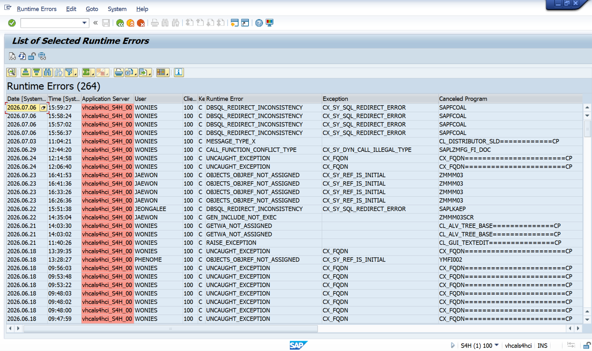
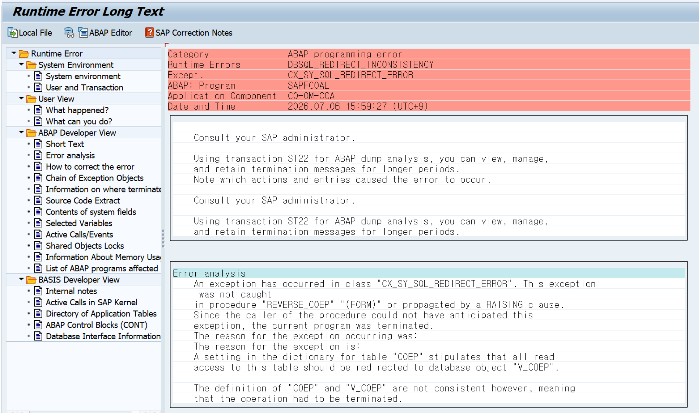
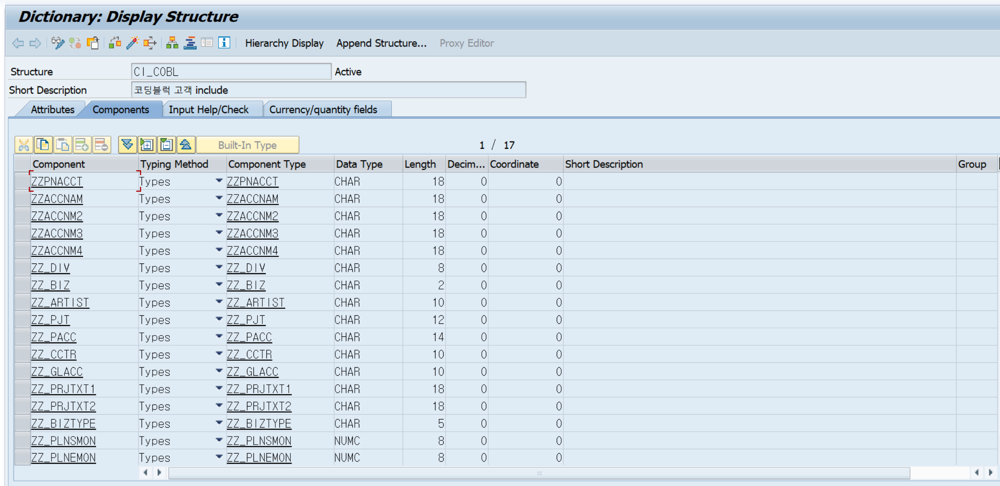
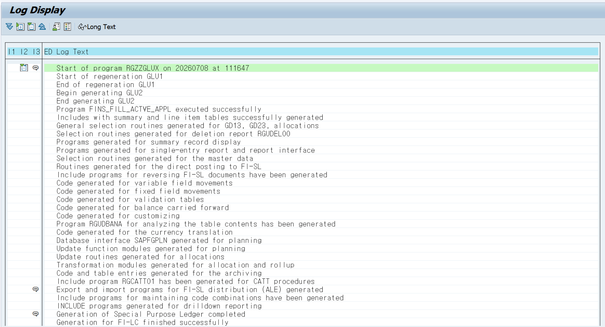
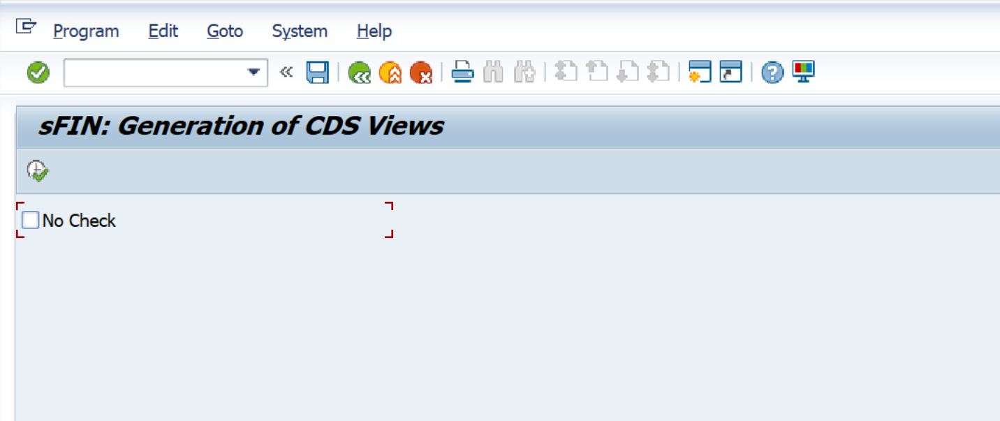
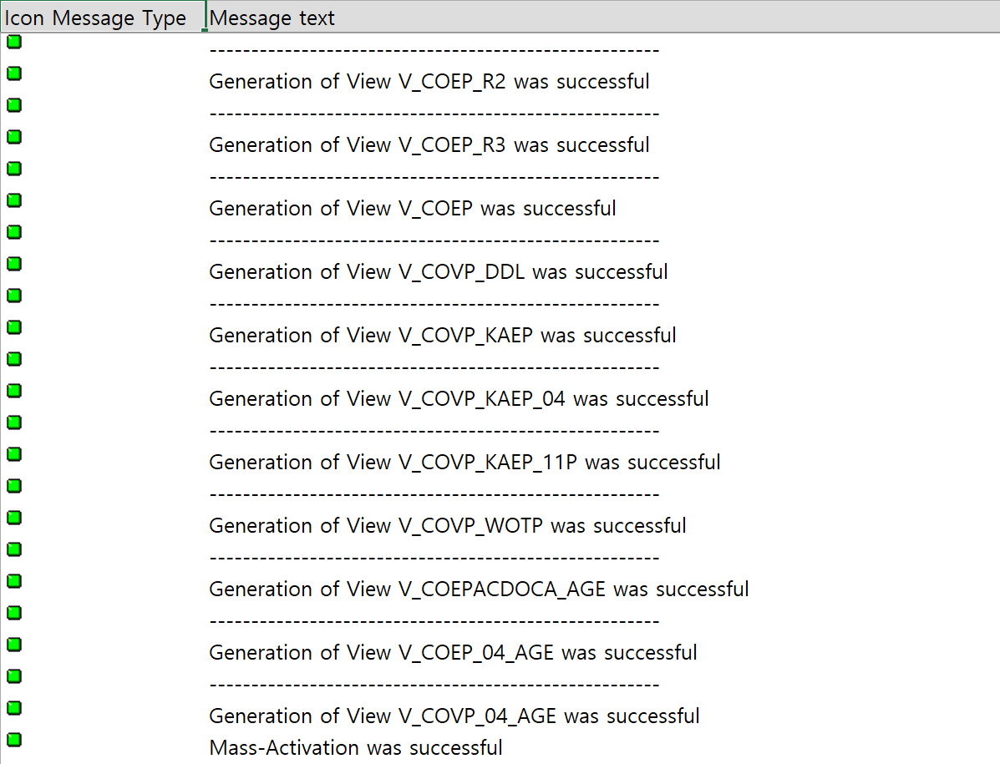
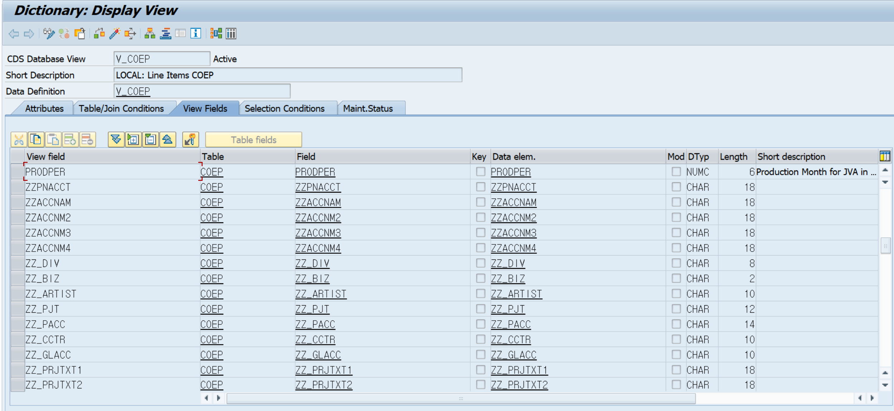
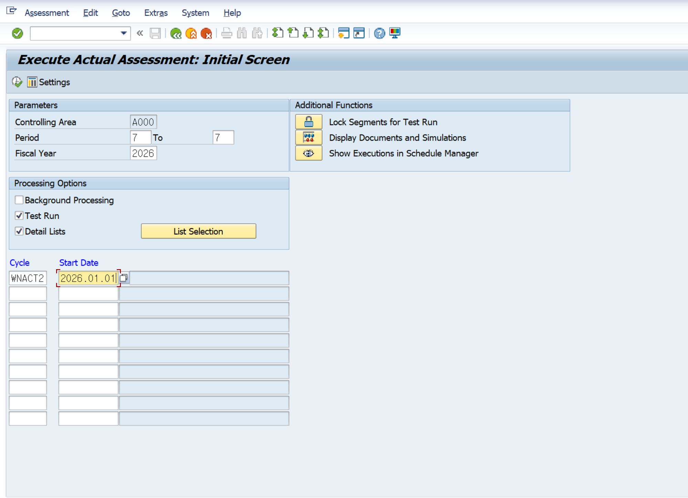
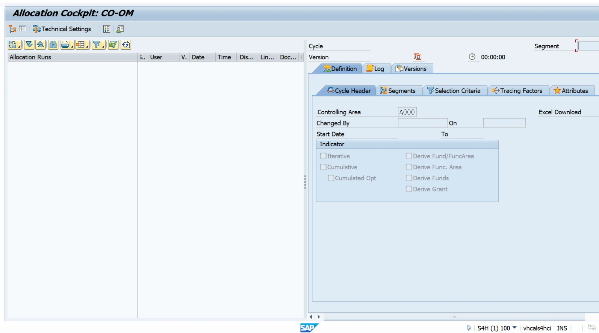
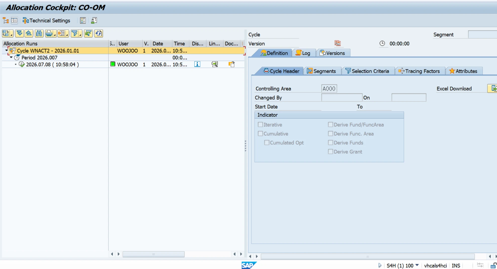

Case Study · Agentic AI × ADT MCP × ST22 Dump Analysis
Agentic AI · MCP (ABAP ADT) · ST22 · DBSQL_REDIRECT_INCONSISTENCY · CO-OM-CCA (KSU5) · Compatibility View · CI_COBL · S/4HANA (Release 758)
문서 목적 · SAP GUI 트랜잭션 대신 ADT MCP 도구만으로 AI 에이전트가 운영 덤프의 원인을 특정하고, 해결을 검증한 실제 과정을 기록한다. 같은 증상(DBSQL_REDIRECT_INCONSISTENCY)의 해결 레시피이자, AI Agent를 활용한 SAP 운영 트러블슈팅 예제로 참고할 수 있다.
작성 · 강우주 (Megazone Cloud, Dev Unit) · 2026-07
대상 시스템 · S4H (SAP CAL S/4HANA Appliance, vhcals4hci), Client 100, HANA DB
도구 · Claude Code + ABAP ADT MCP 서버
들어가며
SAP 운영 장애 분석의 전통적인 동선은 대략 이렇다. ST22를 열어 덤프를 읽고, SE11을 열어 딕셔너리를 뒤지고, SE38로 유틸리티 리포트를 찾고, 브라우저를 열어 SAP Note를 검색한다. 화면을 여러 장 띄워 놓고 사람이 그 사이를 오가며 퍼즐을 맞춘다.
이번에는 질문을 바꿔 던졌다.
"AI 에이전트에게 ADT MCP 연결만 쥐여주면, GUI 없이 덤프의 원인을 특정하고 해결까지 검증할 수 있을까?"
마침 재료가 있었다. S4H 시스템에서 CO 실제 배부(KSU5)가 같은 덤프로 4번 연속 실패해 있었다. 에이전트에게 던진 첫 문장은 한 줄이었다.
"MCP로 s4h 서버에 접속해서, ST22에 존재하는 덤프가 있는지 확인하고 가장 최근 덤프 log를 분석해서 리포트 해주세요. (원인 파악 및 솔루션)"
이후 벌어진 일을 시간 순서대로 기록한다. 결론부터 말하면 — 원인 특정, 오답 걸러내기, 정답 도구 발견, 사후 검증까지 전부 MCP 위에서 이뤄졌고, 사람이 한 일은 GUI에서 버튼을 누르고 그 실행 결과를 확인해 에이전트에게 알려준 것뿐이다.
본문 곳곳의 💬 세션 로그 블록은 실제 세션에서 오간 메시지의 발췌다. 어떤 대화가 어떤 SAP 동작으로 이어졌는지, 시나리오처럼 따라갈 수 있다.
배경 — MCP와 ADT MCP
MCP가 처음이라면. 이 사례를 읽는 데 필요한 배경만 짧게 짚고 간다.
MCP(Model Context Protocol) 는 AI가 외부 시스템의 '도구'를 표준 방식으로 호출하게 해주는 규약이다 — Anthropic이 2024년 말 공개한 JSON-RPC 기반 표준으로, 한 번 만든 MCP 서버는 Claude Code·Cursor·Copilot 등 여러 클라이언트에서 그대로 재사용된다. 구성은 Host(AI 앱 · Claude Code) + LLM + MCP 클라이언트 + MCP 서버(서버가 제공하는 건 주로 LLM이 호출하는 함수인 Tool(도구)). LLM이 "이 도구를 이 인자로 써 줘"(tool_use)라고 하면 클라이언트가 서버를 호출하고, 그 결과(tool_result)를 다시 LLM에 주입한다. 큰 흐름은 요청 → LLM이 도구 선택(tool_use) → MCP 클라이언트·서버가 ADT REST 호출 → SAP 응답 → tool_result 주입 → LLM 자연어 응답이다.
핵심 — LLM은 SAP에 직접 접근하지 않는다. MCP 서버가 알려주는 '사용 가능한 도구 목록'(
tools/list)을 보고 어떤 도구를 어떤 값으로 호출할지만 판단할 뿐, 실제 ADT 호출과 인증(토큰 처리)은 서버가 대신 맡는다.
ADT MCP 는 그 MCP 서버가 제공하는 도구를 SAP의 ADT(ABAP Development Tools) REST API에 연결한 것이다. ADT는 SAP가 Eclipse용으로 만든 공식 REST API(/sap/bc/adt/…)로, 새 프로토콜이 아니라 기존 SAP 자산을 HTTP로 재활용한다 — Eclipse가 안 떠 있어도 이 REST에 직접 HTTP를 던지면 똑같이 동작한다.
왜 SAP GUI가 아니라 ADT인가.
| 항목 | SAP GUI / RFC | ADT |
|---|---|---|
| 통신 | DIAG / RFC (바이너리) | HTTP + XML/JSON |
| 객체 조작 | 화면 트랜잭션 흉내 | Lock·Read·Write·Activate가 명시적 REST 동사 |
| AI 연동 | 낮음 (스크린 스크래핑 필요) | 매우 높음 (정형 응답) |
AI가 ABAP 시스템과 제대로 상호작용하려면 사실상 ADT가 유일한 합리적 선택이다. 이번 사례의 조회(RuntimeListDumps · GetView · GetTable · GetProgram · GetSqlQuery)는 전부 /sap/bc/adt/… 읽기(GET) 계열이다.
안전장치는 네 겹. MCP 자체는 권한을 강제하지 않는 대신, ① 서버 코드(위험한 작업은 애초에 노출 안 함) ② Host 승인 UI(Claude Code가 툴 호출마다 승인 요구) ③ Host 훅(
PreToolUse로 호출을 가로채 차단) ④ SAP 권한(S_DEVELOP등)의 네 겹으로 걸린다. 보안의 마지막 선은 언제나 SAP 권한 — 도구가 많아도 권한이 없으면 아무것도 못 한다. (이번 사례에선 AI가 조회 도구만, 상태 변경은 사람이 GUI로 — 그 분업 자체가 강한 안전 경계였다.)
요약
- 증상 — KSU5(실제 배부) 실행 시
DBSQL_REDIRECT_INCONSISTENCY덤프 4연속 발생. 표준 프로그램 SAPFCOAL이 COEP 조회 중 덤프. - 원인 — 코딩블록 고객 확장(CI_COBL)에 추가된 ZZ 필드 17개가 COEP 테이블에는 반영됐지만, S/4HANA 호환성 뷰 V_COEP에는 미주입 → 테이블/뷰 정의 불일치로 커널이 SQL 리다이렉트를 거부.
- 해결 —
RGZZGLUX는 오답(CO 뷰는 처리 범위 밖). 정답은FCO_CDS_VIEW_GENERATE(패키지 FINS_CO_UTIL). 실행 후 V_COEP 계열 뷰 24종 재생성 → KSU5 정상 완료, 덤프 재발 없음.
01. 증상
한 줄 요약 · 덤프 목록 한 번의 조회로 "일시적 오류"가 아니라 "재현되는 구조적 문제"임이 드러났다.
RuntimeListDumps (ADT REST 피드 조회). GUI 로그인 없음.첫 도구 호출은 RuntimeListDumps — ST22를 여는 대신 ADT REST 피드로 덤프 목록을 가져온다. 최근 10건이 바로 한눈에 들어왔다.
| 발생 시각 | 오류 유형 | 프로그램 | 사용자 |
|---|---|---|---|
| 07-06 15:59:27 | DBSQL_REDIRECT_INCONSISTENCY | SAPFCOAL | WONIES |
| 07-06 15:58:24 | DBSQL_REDIRECT_INCONSISTENCY | SAPFCOAL | WONIES |
| 07-06 15:57:02 | DBSQL_REDIRECT_INCONSISTENCY | SAPFCOAL | WONIES |
| 07-06 15:56:37 | DBSQL_REDIRECT_INCONSISTENCY | SAPFCOAL | WONIES |
| 07-03 11:04 | MESSAGE_TYPE_X | CL_DISTRIBUTOR_SLD | WONIES |
| 06-29 12:44 | CALL_FUNCTION_CONFLICT_TYPE | SAPLZMFG_FI_DOC | WONIES |
| … |
같은 오류가 3분 사이 4회. 사용자가 KSU5를 계속 재시도한 흔적이다. 이 패턴 하나로 "우연히 난 덤프"라는 가설은 시작부터 제외됐다.

그림 1 · 01-st22-dump-list — ST22 덤프 목록. DBSQL_REDIRECT_INCONSISTENCY(SAPFCOAL)가 3분 사이 4건 연속 쌓여 있다.참고 · 덤프 ID는
20260706155927vhcals4hci_S4H_00 ... WONIES 100 13형태의 ADT 리소스 키다. 이후 모든 상세 조회는 이 ID로 이뤄진다.
02. 덤프 해부
한 줄 요약 · 284,770자짜리 덤프 전문은 서브에이전트에게 통째로 맡기고, 메인 세션은 결론만 받았다.
RuntimeAnalyzeDump로 최신 덤프의 포맷된 전문을 가져오니 284KB. 사람이 ST22에서 스크롤로 읽는 그 분량이다. 메인 대화의 컨텍스트를 아끼기 위해 통독은 서브에이전트에 맡기고, 메인 세션은 그동안 Error analysis·How to correct 구간을 직접 발췌해 먼저 결론을 확인했다. 잠시 뒤 도착한 서브에이전트의 구조화된 리포트도 같은 결론이었다.
분석이 가리킨 핵심은 세 곳이었다 — 원인 문장, 종료 지점, 콜스택.
(1) Error analysis — 원인 문장. 덤프가 원인을 문장으로 말해주고 있었다.
"A setting in the dictionary for table COEP stipulates that all read access to this table should be redirected to database object V_COEP. The definition of "COEP" and "V_COEP" are not consistent however."

그림 2 · 02-dump-error-analysis — 덤프 상세의 Error analysis 섹션. COEP → V_COEP 리다이렉트 정의 불일치가 원인 문장으로 명시되어 있다.(2) 종료 지점 — 표준 코드의 평범한 SELECT.
* SAPFCOAL, Include FCOALF10, FORM reverse_coep (154행)
SELECT * FROM coep
APPENDING TABLE icoep
WHERE
kokrs = co_cycle-kokrs AND
belnr = docnr.
(3) 콜스택 — 업무 맥락.
8 REVERSE_COEP SAPFCOAL FCOALF10 154 ← 종료 지점
7 REVERSE_CCSS SAPFCOAL FCOALF10 129
6 BOOK_REVERSAL_DOCUMENT SAPLKGA2 LKGA2U02 840
5 K_ALLOCATIONS_REVERSE SAPLKGA2 LKGA2U02 651
4 K_ALLOCATIONS_RUN SAPLKGA2 LKGA2U01 126
3 RUN SAPMKGA2 MKGA2F10 93 ← KSU5 실행
조합하면: KSU5로 배부 사이클 A000WNACT2(세그먼트 "가구 본사비 실적 배부")를 재실행 → 기존 CO 문서 0300010300의 역분개 단계 → COEP 읽기에서 덤프. 예외 객체의 ENTITY=COEP / REDIRECT=V_COEP, 커널 함수 checkRedirection(dbi_ast_symbol_table.cpp:1616), SQLCODE=0까지 확인 — DB 오류가 아니라 순수 DDIC 메타데이터 불일치라는 뜻이다.
여기서 배경 지식 하나. S/4HANA에서 CO 개별항목의 실적 데이터는 ACDOCA로 통합됐고, 레거시 코드가 COEP를 읽으면 커널이 이를 호환성 뷰 V_COEP로 자동 리다이렉트한다. 이 리다이렉트 시점마다 커널이 테이블과 뷰의 필드 정의를 비교하는데, 하나라도 어긋나면 이 덤프가 난다.
03. DDIC 스캔
한 줄 요약 · SE11을 열지 않고 GetView → GetTable → GetStructure 체인으로 내려가니, 불일치의 실체가 필드 이름 17개로 특정됐다.
"정의가 불일치한다"는 덤프의 문장을 어느 필드가 어떻게 다른가까지 끌어내리는 것이 이 단계의 목표였다.
Step 1 — 뷰 쪽. SearchObject('V_COEP*')로 리다이렉트 대상의 정체를 확인했다: DDL Source V_COEP / CDS 엔티티 V_COEP_VIEW / SQL 뷰 V_COEP (패키지 KACC_ERP50). GetView('V_COEP')로 DDL 전문을 읽자 눈에 걸리는 부분이 있었다.
budget_pd,
pbudget_pd,
prodper,
// Do not delete this comment
//<$VF>
//<$FIELDS> ← 비어 있는 플레이스홀더
//<$VF>
awtyp,
...
from coep
where not ( wrttp = '04' or wrttp = 'U4' or wrttp = 'U1' )
union all
select ...
from V_Coep_R3_view ← ACDOCA를 COEP 구조로 매핑하는 하위 뷰
//<$FIELDS>는 고객 확장 필드가 자동 주입되는 자리다. 그런데 비어 있다. "테이블에는 확장 필드가 있는데 뷰에는 없다"는 가설이 이 시점에 섰다.
Step 2 — 테이블 쪽. GetTable('COEP') → key include coep_key + include coep_only + 후미 필드 구성. GetStructure('COEP_ONLY')의 끝부분에서 결정적 단서가 나왔다.
include fcom_s_incl_budget_period; → 뷰와 일치 ✓
include incl_prodper; → 뷰와 일치 ✓
include ci_cobl; ← ★ 코딩블록 고객 include
ci_prs_cpils_2 : include ci_prs_cpils_2; (시스템에 미존재 = 기여 없음, 정상)
Step 3 — 범인. GetStructure('CI_COBL'):
zzpnacct, zzaccnam, zzaccnm2, zzaccnm3, zzaccnm4,
zz_div, zz_biz, zz_artist, zz_pjt, zz_pacc,
zz_cctr, zz_glacc, zz_prjtxt1, zz_prjtxt2,
zz_biztype, zz_plnsmon, zz_plnemon — 17개 필드

그림 3 · 04-ci-cobl-structure — SE11의 CI_COBL(코딩블록 고객 include). COEP에는 반영됐지만 뷰에는 없는 ZZ 필드 17개.이 17개가 COEP_ONLY → include ci_cobl 경로로 COEP의 정식 필드가 되어 있는데, V_COEP의 <$FIELDS> 자리는 비어 있다. COEP = 뷰보다 17개 필드 많음. 커널의 리다이렉트 정합성 체크가 실패할 수밖에 없는 구조다. (GetInactiveObjects()도 0건 — "활성화하다 만" 상태가 아니었다.)
| 검증 항목 | 결과 |
|---|---|
| COEP_KEY (mandt, kokrs, belnr, buzei) | 뷰와 일치 ✓ |
| COEP_ONLY 표준 필드 + budget/prodper include | 뷰와 일치 ✓ |
| CI_COBL (ZZ 필드 17개) | 뷰에 없음 ✗ ← 불일치 지점 |
| 후미 필드 (awtyp ~ qunit3) | 뷰와 일치 ✓ |
| 비활성 오브젝트 | 0건 (활성화 미완료 아님) |
✅ 코딩블록 확장(OXK3) 후 호환성 뷰 재생성이 아예 누락된 상태 — 그것이 불일치의 정체였다.
04. 1차 시도와 실패
한 줄 요약 · "실행했으니 됐겠지"가 아니라, 실행 직후 같은 도구로 재검증했기에 오답임을 10분 만에 알았다.
코딩블록 확장 후 재생성이라면 교과서적 답은 RGZZGLUX(코딩블록 전체 재생성)다. 사용자가 SE38에서 실행하고 그 결과를 에이전트에게 전달했다. 로그는 온통 성공이었다.
Start of program RGZZGLUX on 20260708 at 103621
...
Coding block subscreens were generated without error
Table ACDOC_SI_NUM_CHAR_CUST_GEN was generated successfully
End of program RGZZGLUX on 20260708 at 103710
Financial accounting programs have been generated successfully

그림 4 · 05-rgzzglux-log — RGZZGLUX 실행 로그. 전 항목 성공이지만, CO 호환성 뷰는 처리 목록에 없다.GetView('V_COEP') 재조회 → "문제가 아직 해소되지 않았습니다" 판정.여기서 멈췄다면 "조치 완료"로 오판했을 것이다. 그러나 에이전트는 곧바로 GetView('V_COEP')를 다시 호출했고 — //<$FIELDS>는 여전히 비어 있었다.
로그를 다시 읽어보면 이유가 보인다. RGZZGLUX가 만진 것은 FI-SL 프로그램, 코딩블록 서브스크린, ACDOCA 쪽 include(ACDOC_SI_NUM_CHAR_CUST_GEN)까지다. CO 호환성 뷰(V_COEP)는 처리 범위 밖이었다.
실행 로그의 "성공"과 문제의 "해결"은 다른 명제다. 검증은 로그가 아니라 대상 오브젝트에서 해야 한다.
이 실패가 완전히 헛되지는 않았다. ACDOCA 측 고객필드 include가 재생성된 상태였기에, 다음 단계의 뷰 재생성이 한 번에 통과할 토대는 오히려 마련돼 있었다.
05. 올바른 도구 찾기
한 줄 요약 · 웹 검색으로 후보를 찾고, 시스템 검색으로 존재를 확인하고, 소스 리딩으로 파라미터의 의미까지 파악한 뒤에 실행을 요청했다.
RGZZGLUX가 미해소로 판정된 뒤, 에이전트는 정답 도구를 세 갈래 탐색으로 찾았다.
- WebSearch —
DBSQL_REDIRECT_INCONSISTENCY COEP V_COEP CI_COBL검색. SAP 커뮤니티의 동일 증상 사례(BSEG/ACDOCA 확장 계열)에서FCO_CDS_VIEW_GENERATE리포트가 해법으로 등장. - SearchObject — 실제 시스템에서
FCO_CDS*패턴 검색. 패키지 FINS_CO_UTIL에 4형제가 존재함을 확인:
| 프로그램 | 설명 | 용도 |
|---|---|---|
| FCO_CDS_VIEW_GENERATE | sFIN: Generation of CDS Views | CO 호환성 뷰 전체 재생성 (채택) |
| FCO_CDS_VIEW_REPAIR | sFIN: Repair single CDS View | 단건 수리 |
| FCO_CDS_VIEW_RESET | sFIN: Reset of CDS Views | 필드 제거/초기화 |
| FCO_CDS_VIEW_GENERATE_XPRA | XPRA 버전 | 업그레이드용 |
- GetProgram — 실행 전에 소스를 읽었다. 선택화면의 유일한 체크박스
no_check가 무엇인지 코드로 확인:
PARAMETERS: p_debug TYPE abap_bool NO-DISPLAY,
no_check TYPE abap_bool AS CHECKBOX.
...
cl_fco_cds_view_generator=>generate_coep(
EXPORTING iv_debug = p_debug
iv_no_check = no_check "note 2502634
... ).
no_check는 SAP Note 2502634로 추가된 "사전 점검 생략" 플래그. 1차 실행은 체크 없이가 정석이라는 가이드까지 소스에서 도출됐다.
세 갈래를 종합해, 에이전트가 사용자에게 내놓은 가이드는 이랬다.
검증 결과: RGZZGLUX로는 해소되지 않았습니다 → 올바른 도구는 FCO_CDS_VIEW_GENERATE (패키지 FINS_CO_UTIL).
이 프로그램이 CI_COBL 고객 필드를 읽어 V_COEP 등 CO 호환성 뷰의 <$FIELDS>/<$FIELDSAPP> 자리에 주입·활성화합니다. SAP 커뮤니티에서도 CI_COBL 확장 후 발생하는 동일 증상(COEP vs V_COEP 컬럼 수 불일치)의 해법으로 확인됩니다.
실행 순서
SE38→FCO_CDS_VIEW_GENERATE실행 (RGZZGLUX가 ACDOCA 측 include를 방금 재생성해 두었으므로 순서상 지금 실행하면 됩니다)- 실행 후 저에게 알려주시면 V_COEP 활성 버전을 재스캔해서 ZZ 필드 17개 주입 여부를 검증해 드리겠습니다
- 검증 통과 후
KSU5재실행 (사이클 A000WNACT2 — 실패한 역분개 문서 0300010300부터)
참고 · 유사 사례에서 SAP Note 2686694(MSEG 사례 How-To), 2569265(클라이언트 복사 중 동일 덤프), 2178099(COEP/COEJ 필드 누락)가 언급됩니다.
Sources
- S/4HANA Extend BSEG from CI_COBL encounter error — SAP Community
- Problem extending ACDOCA — SAP Community
- DBSQL_REDIRECT_INCONSISTENCY — TCodeSearch
- SAP KBA 2569265 — Dump DBSQL_REDIRECT_INCONSISTENCY during Client Copy
- SAP KBA 2178099 — ERKRS/CE4KEY fields missing from COEP/COEJ

그림 5 · 06-fco-generate-selscreen — FCO_CDS_VIEW_GENERATE 선택화면. 화면에 보이는 것은 "No Check" 체크박스 하나뿐이지만, 그 의미는 소스를 읽어야 알 수 있다.GetProgram('FCO_CDS_VIEW_GENERATE') — 추측이 아니라 방금 읽은 소스로 답했다.06. 해결과 검증
한 줄 요약 · 뷰 24종 재생성 → DDL 재확인 → 그런데 KSU5 테스트런이 빈 화면 → SQL 조회로 "정상 동작"임을 규명 → 실제 실행 성공.
6-1. 재생성과 1차 검증
사용자가 FCO_CDS_VIEW_GENERATE를 실행했고, 에이전트가 결과를 확인하니:
Start of Generation V_COEP_*: Date 2026.07.08, Time 10:46:06
Generation of View V_COEP_ACDOCA_DDL was successful
Generation of View V_COEP_R3 was successful
Generation of View V_COEP was successful
Generation of View V_COVP_KAEP was successful
... (총 24종)
Mass-Activation was successful

그림 6 · 07-fco-generate-log — FCO_CDS_VIEW_GENERATE 결과 로그. V_COEP 포함 24종 재생성 + Mass-Activation 성공.이번에도 로그를 믿지 않고 GetView('V_COEP')로 재검증했다. 이번에는 달랐다:
// Do not delete this comment
//<$VF>
zzpnacct,
zzaccnam,
...
zz_plnemon, ← 17개 필드가 UNION 양쪽 구간 모두에 주입됨
//<$FIELDS>
//<$VF>

그림 7 · 08-vcoep-ddl-after — 조치 후 V_COEP DDL. 조치 전 비어 있던//<$FIELDS> 자리에 ZZ 필드 17개가 주입되어 있다.
✅ DDIC 불일치 해소 확정.
6-2. 빈 Cockpit의 미스터리
KSU5 재실행 단계에서 작은 반전이 있었다. 입력값을 채우고 테스트 런을 돌렸는데 Allocation Cockpit이 텅 비어 나온 것이다. "또 뭔가 잘못됐나?" 싶은 순간, 에이전트가 두 가지를 조회했다.

그림 8 · 09-ksu5-initial-screen — KSU5 초기 화면. 관리회계영역 A000, 7기간/2026, 사이클 WNACT2(시작일 2026.01.01), Test Run 체크 상태.
그림 9 · 10-cockpit-empty — 테스트 런 직후의 Allocation Cockpit. 실행 건이 하나도 표시되지 않아 실패처럼 보이지만, 원인 규명 결과 정상 동작이었다.RuntimeListDumps + GetSqlQuery(COBK) → "네, 테스트 런을 빼고 실제 실행하시면 됩니다. 빈 화면은 오류가 아니라 정상 동작입니다."RuntimeListDumps(user=WONIES)→ 새 덤프 없음. 수정은 유효하다.GetSqlQuery로 COBK 조회 → 문서 0300010300이 역분개되지 않은 활성 상태(STOKZ/STFLG 공백)로 남아 있음을 확인.
퍼즐이 맞춰졌다. 7기간에 이미 배부 문서가 존재하는데, 테스트 런은 기존 문서의 역분개를 수행하지 않는다(역분개는 실제 실행에서만). 처리할 대상이 없으니 Cockpit이 빈 것 — 오류가 아니라 정상 동작이었다. 참고로 사이클 입력값(WNACT2, 시작일 2026.01.01)도 추측이 아니라 GetSqlQuery로 T811C를 조회해 확정했다. 덤프 변수에 찍힌 A000WNACT2가 "관리회계영역(A000) + 사이클명(WNACT2)"의 결합 키라는 것까지.
6-3. 실제 실행과 최종 검증
테스트 런 체크를 해제하고 실제 실행. Cockpit에 초록 불이 들어왔다 (2026.07.08 10:58:04). 마지막으로 세 가지를 재확인했다.

그림 10 · 11-cockpit-success — 실제 실행 후의 Allocation Cockpit. Cycle WNACT2 — Period 2026.007 아래 초록 상태의 실행 건이 표시됐다. 7/6 이후 처음으로 완주한 실행이다.GetSqlQuery(COBK — 역분개·신규 문서 확인) + RuntimeListDumps(재발 확인).| 검증 항목 | 방법 | 결과 |
|---|---|---|
| 기존 문서 0300010300 | GetSqlQuery (COBK) | ✅ 역분개 완료 (STOKZ=X, STFLG=X) — 7/6에 4연속 덤프났던 바로 그 단계 통과 |
| 신규 배부 문서 | GetSqlQuery (COBK) | ✅ 0300010500 / 0300010501 정상 포스팅 (7기간/2026, RKIU) |
| 덤프 재발 | RuntimeListDumps | ✅ DBSQL_REDIRECT_INCONSISTENCY 재발 없음 |
✅ 이슈 클로즈.
07. 무엇이 달랐나
한 줄 요약 · AI는 조회·분석·검증을, 사람은 실행과 승인을 맡았다. 경계는 "시스템 상태를 바꾸는가"였다.
역할 분담
| 단계 | AI (MCP로 직접) | 사람 (GUI) |
|---|---|---|
| 증상 파악 | 덤프 목록/전문 조회·분석 | — |
| 원인 특정 | 뷰 DDL, 테이블, 구조체, 비활성 오브젝트 스캔 | — |
| 도구 선정 | 웹 검색, 오브젝트 검색, 리포트 소스 리딩 | — |
| 조치 실행 | — | RGZZGLUX, FCO_CDS_VIEW_GENERATE, KSU5 실행 |
| 결과 전달 | — | 실행 결과를 채팅으로 공유 |
| 검증 | 실행 때마다 뷰/덤프/DB 재조회 | — |
시스템 상태를 바꾸는 실행(재생성 리포트, 배부 포스팅)은 전부 사람이 GUI에서 눌렀다. 반대로 읽기 계열은 전부 AI가 MCP로 처리했고, 사람은 SE11도 ST22도 열지 않았다.
검증 루프가 만든 차이
이번 케이스의 분기점은 두 번의 "실행 후 즉시 재검증"이었다.
- RGZZGLUX 직후 — 로그는 전부 성공이었지만
GetView재조회로 placeholder가 여전히 빈 것을 발견. "성공 로그 ≠ 문제 해결"을 10분 만에 판정하고 다음 탐색으로 이동. - 테스트 런의 빈 화면 — 겉보기엔 실패 신호였지만 덤프 재조회 + COBK 조회로 "정상 동작"임을 규명. 불필요한 원점 회귀를 차단.
사람이 GUI로 같은 검증을 하려면 SE11 비교, ST22 재확인, SE16 조회를 오가야 한다. 에이전트는 이것을 실행 결과가 도착한 그 턴에 곧바로 처리했다.
축적
세션 마지막에 이 트러블슈팅의 요지("이 시스템에서 같은 덤프가 재발하면 RGZZGLUX가 아니라 FCO_CDS_VIEW_GENERATE")를 에이전트의 영구 메모리에 저장했다. 다음 세션의 에이전트는 이 오답 경로를 건너뛴다. 함정이 개인의 경험이 아니라 팀의 자산으로 축적되는 구조다.
맺음말
이번 실험의 답은 이렇게 정리할 수 있다.
"GUI 없이 가능한가?" — 분석과 검증은 완전히 가능했다. 덤프 전문 해부, DDIC 3단 스캔(뷰→테이블→구조체), 유틸리티 리포트의 소스 리딩, 트랜잭션 데이터 SQL 조회까지 — ST22·SE11·SE38·SE16이 하던 일이 전부 MCP 호출로 대체됐다.
"AI가 다 했는가?" — 아니다. 실행 버튼은 전부 사람이 눌렀고, 그래야 했다. 시스템 상태를 바꾸는 결정에 사람의 승인이 끼는 구조는 안전장치이자, 역설적으로 AI가 분석에 전념하게 하는 분업이기도 했다.
가장 큰 소득은 속도가 아니라 검증 밀도였다. 사람은 "성공 로그"를 보면 넘어가고 싶어진다. 에이전트는 실행 결과가 올 때마다 기계적으로 대상 오브젝트를 재조회했고, 그 습관이 오답(RGZZGLUX)을 조기에 걸러내고 가짜 실패(빈 Cockpit)를 오판하지 않게 했다. 운영 트러블슈팅에서 AI 에이전트의 가치는 "빨리 아는 것"보다 "확인 없이 넘어가지 않는 것" 에 있었다.
부록 A. 사용한 MCP 도구 목록
| 도구 | 용도 | 이번 케이스에서의 쓰임 |
|---|---|---|
| RuntimeListDumps | ST22 덤프 목록 | 증상 파악, 조치 후 재발 확인 (3회) |
| RuntimeAnalyzeDump | 덤프 상세/포맷 전문 | 284KB 로그 확보 → 서브에이전트 분석 |
| SearchObject | 오브젝트 검색 | V_COEP 정체 확인, FCO_CDS* 도구 발견 |
| GetView | CDS/DDL 소스 조회 | placeholder 발견, 조치 전후 3회 비교 검증 |
| GetTable / GetStructure | 테이블·구조체 정의 | COEP → COEP_ONLY → CI_COBL 체인 스캔 |
| GetInactiveObjects | 비활성 오브젝트 | "활성화 미완료" 가설 배제 |
| GetProgram | ABAP 소스 조회 | FCO_CDS_VIEW_GENERATE의 no_check 의미 확인 |
| GetSqlQuery | ABAP SQL 조회 | T811C(사이클), COBK(문서 상태) 확인 |
| WebSearch / WebFetch | 웹 검색 | 해법 후보(FCO_CDS_VIEW_GENERATE) 발굴 |
부록 B. 타임라인
| 시각 (2026) | 사건 |
|---|---|
| 07-06 15:56 ~ 15:59 | KSU5 실행 → DBSQL_REDIRECT_INCONSISTENCY 4연속 덤프 |
| 07-08 10:30~ | 에이전트 분석 시작 — 덤프 목록/전문, 원인 문장 확보 |
| 07-08 ~10:36 | DDIC 스캔 — CI_COBL 17개 ZZ 필드 vs 빈 <$FIELDS> 특정 |
| 07-08 10:36~10:37 | RGZZGLUX 실행 (사람) → 재검증 결과 미해결 판정 (AI) |
| 07-08 10:46 | FCO_CDS_VIEW_GENERATE 실행 (사람) → 뷰 24종 재생성 성공 |
| 07-08 10:4x | GetView 재검증 — ZZ 필드 주입 확인 (AI) |
| 07-08 10:5x | KSU5 테스트 런 → 빈 Cockpit → "정상 동작" 규명 (AI: 덤프/COBK 조회) |
| 07-08 10:58 | KSU5 실제 실행 성공 — 역분개 + 신규 문서 2건 포스팅 |
| 07-08 ~11:00 | 최종 검증 (덤프 재발 없음) → 이슈 클로즈, 메모리 저장 |
07-06 덤프 발생 후, 07-08 분석 착수(10:30~)부터 이슈 클로즈까지 전 과정이 30분이 채 걸리지 않았다.
부록 C. 재발 시 조치 요약 (레시피)
증상 · DBSQL_REDIRECT_INCONSISTENCY, Error analysis에 "COEP … redirected to database object V_COEP … not consistent".
- 원인 확인 — SE11(또는 MCP GetStructure)로
CI_COBL필드 목록 확인 → GetViewV_COEP의//<$FIELDS>플레이스홀더와 대조. 테이블에만 있는 필드가 있으면 확진. - 조치 — SE38 →
FCO_CDS_VIEW_GENERATE실행 ("No Check" 미선택). ⚠️RGZZGLUX는 이 케이스를 해결하지 못한다 (FI-SL/서브스크린/ACDOCA include까지만 처리). - 검증 — V_COEP DDL에 확장 필드 주입 확인 → 원 트랜잭션 재실행 → ST22 재발 확인.
- 주의 — KSU5는 대상 기간에 기포스팅 문서가 있으면 테스트 런에서 역분개를 하지 않아 Cockpit이 비어 보일 수 있다. 오류가 아니다. 실제 실행에서 역분개+재배부가 수행된다.
- 관련 도구 — 단건 수리
FCO_CDS_VIEW_REPAIR, 필드 제거FCO_CDS_VIEW_RESET.no_check옵션은 SAP Note 2502634 참고.